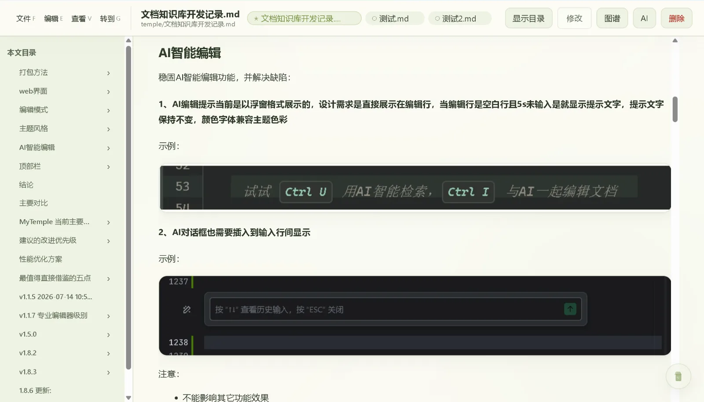
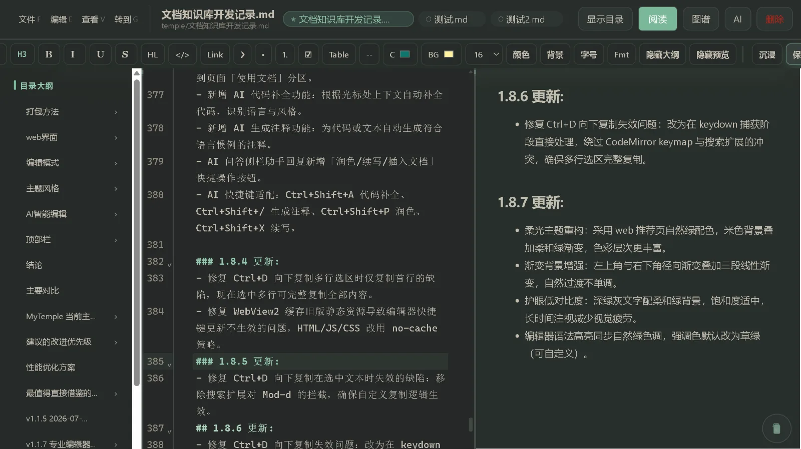
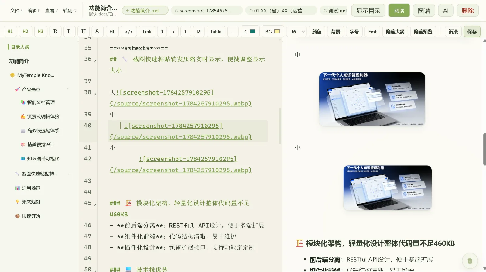
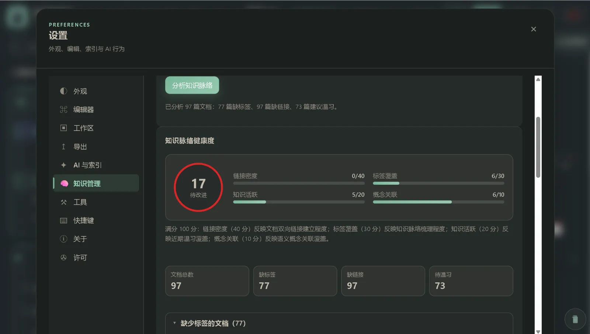
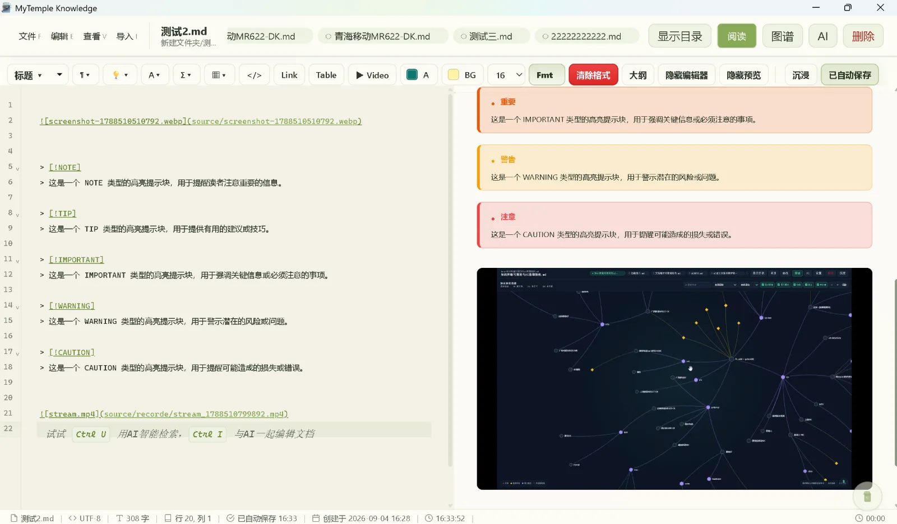
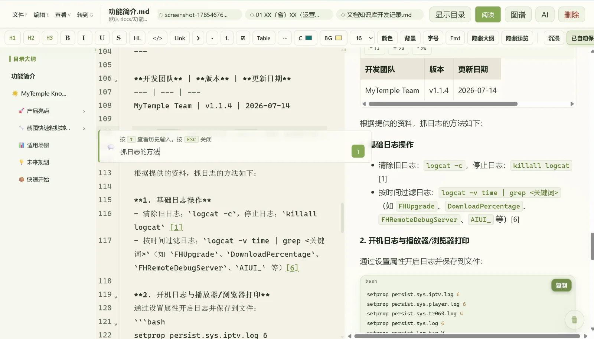
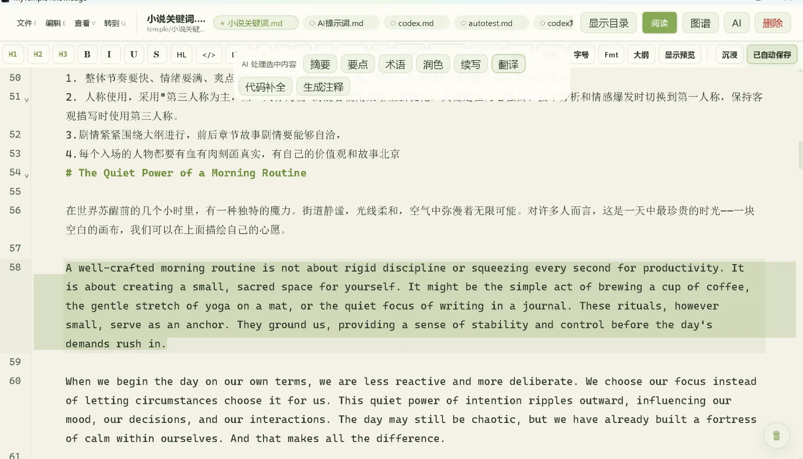
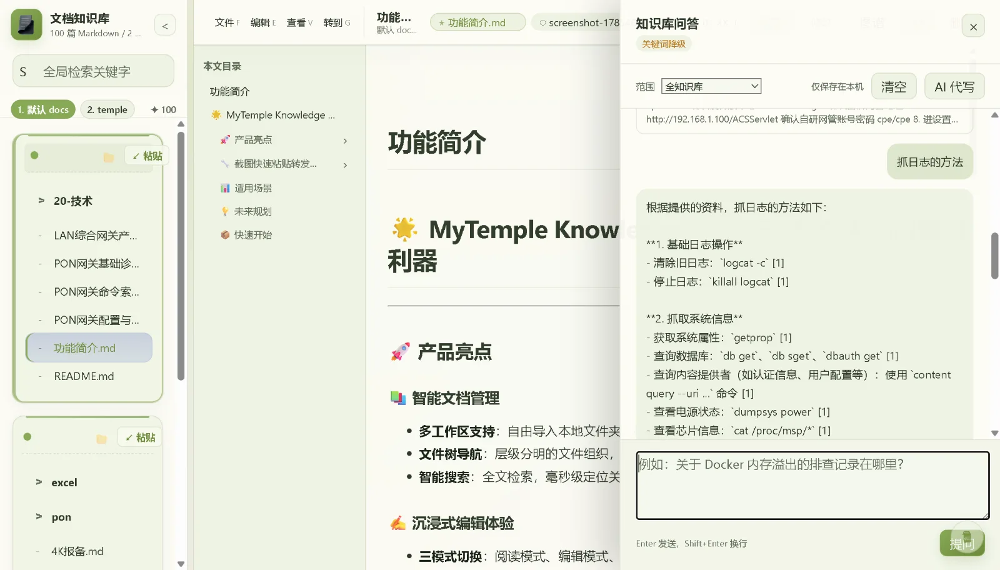

01
阅读模式
目录、正文与任务勾选分离呈现，支持预估阅读时间与章节快速跳转

本地 Markdown 工作区 v1.8.95 桌面版
围绕本地 Markdown 文件提供阅读、编辑、目录、图谱、检索、主题与多工作区管理。
Windows 桌面端 · 本地文件优先 · 内容助手为可选接入
适合长期积累与维护的资料
CORE CAPABILITIES
不改变 Markdown 文件本身，围绕目录、图谱、检索、主题、性能与日常维护体验补强。
PRODUCT SURFACE
围绕阅读、编辑、检索与图谱四种核心场景。
目录、正文与任务勾选分离呈现，支持预估阅读时间与章节快速跳转

格式工具栏、实时预览与快捷键面板围绕输入稳定性展开，支持沉浸模式

文档、标签与语义概念分层展示，轻柔关系线替代高亮噪音，重点节点一目了然
多工作区切换、自动保存与增量索引围绕本地目录组织，可迁移、可备份、可离线使用

文档间链接关系自动生成知识神经图谱，最新文档自动居中，关系强弱一眼看清

编辑器内关键字行浏览目录、代码补全与行内对话栏围绕光标位置精准定位

OPTIONAL ASSIST
内容助手为可选接入，默认关闭。开启后可在编辑过程中提供对话、润色翻译与语义检索等辅助能力。
光标位置直接对话，结果插入文档，支持历史记录

选中文本一键润色、续写或翻译，保留 Markdown 结构

自然语言检索知识库内容，快速定位相关文档段落

SOFT EYECARE PRESETS
参考柔光纸面与浅绿工作台思路，降低大面积纯白刺眼感。
干净明亮，适合白天快速浏览与校对。
略带暖意的纸面色，更柔和，也更接近日常阅读。
保留层级对比，适合夜间集中输入与排版。
轻豆沙绿底色，降低反差，适合长时间阅读与维护。
偏复古的纸面感，适合长篇阅读、摘录与整理。
偏冷静的工作底色，适合技术资料和结构化文档。
DOCUMENTS & GUIDES
版本下载
BUILT-IN DOCS
[文本](相对路径.md) 格式，图谱会自动识别关联。:::tip / :::warning / :::note 等。